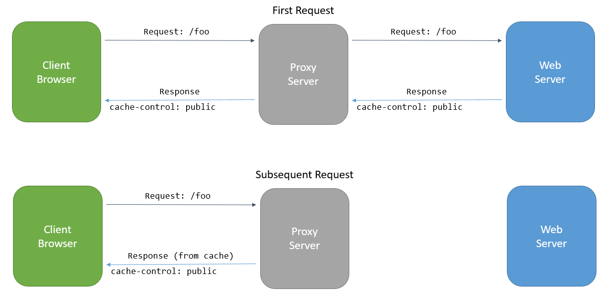

Response Caching¶
What is Response Caching¶
Response caching refers to specifying cache-related headers on HTTP responses made by ASP.NET MVC actions. These headers specify how you want client and intermediate (proxy) machines to cache responses to certain requests (if at all). This can reduce the number of requests a client or proxy makes to the web server, since future requests for the same action may be served from the client or proxy’s cache. In this case, the request is never made to the web server.
The primary HTTP header used for caching is Cache-Control. The HTTP 1.1 specification details many options for this directive. Three common directives are:
- public
- Indicates that the response may be cached.
- private
- Indicates the response is intended for a single user and must not be cached by a shared cache. The response could still be cached in a private cache (for instance, by the user’s browser).
- no-cache
- Indicates the response must not be used by a cache to satisfy any subsequent request (without successful revalidation with the origin server).
Note
Response caching does not cache responses on the web server. It differs from output caching, which would cache responses in memory on the server in earlier versions of ASP.NET and ASP.NET MVC. Output caching middleware is planned to be added to ASP.NET Core in a future release.
Additional HTTP headers used for caching include Pragma and Vary, which are described below. Learn more about Caching in HTTP from the specification.
ResponseCache Attribute¶
The ResponseCacheAttribute is used to specify how a controller action’s headers should be set to control its cache behavior. The attribute has the following properties, all of which are optional unless otherwise noted.
- Duration
int - The maximum duration (in seconds) the response should be cached. Required unless NoStore is
true. - Location
ResponseCacheLocation - The location where the response may be cached. May be
Any,None, orClient. Default isAny. - NoStore
bool - Determines whether the value should be stored or not, and overrides other property values. When
true,Durationis ignored andLocationis ignored for values other thanNone. - VaryByHeader
string - When set, a
varyresponse header will be written with the response. - CacheProfileName
string - When set, determines the name of the cache profile to use.
- Order
int - The order of the filter (from IOrderedFilter).
The ResponseCacheAttribute is used to configure and create (via IFilterFactory) a ResponseCacheFilter, which performs the work of writing the appropriate HTTP headers to the response. The filter will first remove any existing headers for Vary, Cache-Control, and Pragma, and then will write out the appropriate headers based on the properties set in the ResponseCacheAttribute.
The Vary Header¶
This header is only written when the VaryByHeader propery is set, in which case it is set to that property’s value.
NoStore and Location.None¶
NoStore is a special property that overrides most of the other properties. When this property is true, the Cache-Control header will be set to “no-store”. Additionally, if Location is set to None, then Cache-Control will be set to “no-store, no-cache” and Pragma is likewise set to no-cache. (If NoStore is false and Location is None, then both Cache-Control and Pragma will be set to no-cache).
A good scenario in which to set NoStore to true is error pages. It’s unlikely you would want to respond to a user’s request with the error response a different user previously generated, and such responses may include stack traces and other sensitive information that shouldn’t be stored on intermdiate servers. For example:
[ResponseCache(Location = ResponseCacheLocation.None, NoStore = true)]
public IActionResult Error()
{
return View();
}
This will result in the following headers:
Cache-Control: no-store,no-cache
Pragma: no-cache
Location and Duration¶
To enable caching, Duration must be set to a positive value and Location must be either Any (the default) or Client. In this case, the Cache-Control header will be set to the location value followed by the “max-age” of the response.
Note
Location‘s options of Any and Client translate into Cache-Control header values of public and private, respectively. As noted previously, setting Location to None will set both Cache-Control and Pragma headers to no-cache.
Below is an example showing the headers produced by setting Duration and leaving the default Location value.
[ResponseCache(Duration=60)]
Produces the following headers:
Cache-Control: public,max-age=60
Cache Profiles¶
Instead of duplicating ResponseCache settings on many controller action attributes, cache profiles can be configured as options when setting up MVC in the ConfigureServices method in Startup. Values found in a referenced cache profile will be used as the defaults by the ResponseCache attribute, and will be overridden by any properties specified on the attribute.
Setting up a cache profile:
1 2 3 4 5 6 7 8 9 10 11 12 13 14 15 16 17 | public void ConfigureServices(IServiceCollection services)
{
services.AddMvc(options =>
{
options.CacheProfiles.Add("Default",
new CacheProfile()
{
Duration=60
});
options.CacheProfiles.Add("Never",
new CacheProfile()
{
Location = ResponseCacheLocation.None,
NoStore = true
});
});
}
|
Referencing a cache profile:
[ResponseCache(CacheProfileName="Default")]
Tip
The ResponseCache attribute can be applied both to actions (methods) as well as controllers (classes). Method-level attributes will override the settings specified in class-level attributes.
In the following example, a class-level attribute specifies a duration of 30 while a method-level attributes references a cache profile with a duration set to 60.
1 2 3 4 5 6 7 8 | [ResponseCache(Duration=30)]
public class HomeController : Controller
{
[ResponseCache(CacheProfileName = "Default")]
public IActionResult Index()
{
return View();
}
|
The resulting header:
Cache-Control: public,max-age=60